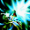

2012～ 光奏師 覚醒スキル一覧
ルミナスモナーク
クリスタルオペレータ
ラディアンスコーディネーター
ルミナスモナーク
| ルミナスモナーク | |||||||
|---|---|---|---|---|---|---|---|
| [専用パッシブ] 効率重視 | |||||||
| スキル説明 |
スキル使用時、CP消耗減少 |
||||||
| スキル効果 |
スキルCP消耗 20％減少 |
||||||
 |
[専用覚醒スキル] クリムゾン・アイ【改】 | |||||||
|---|---|---|---|---|---|---|---|---|
| スキル難易度 | 5 | |||||||
| 必要スキル | クリムゾン・アイ[50] |
|||||||
| スキル説明 |
RED STONEの影響で変異してしまった右目の力を解放させ、周辺にいるすべての敵に強力な光属性の魔法攻撃を行う。 周囲の敵が少ない場合は、最大三回まで攻撃する。 |
|||||||
| レベル | 0 | 1 | 2 | 3 | 4 | 5 | ... | 50 |
| 消費CP | 266 | 270.4 | 274.8 | 279.2 | 283.6 | 288 | ... | 486 |
| 獲得CP | 30 | 30.5 | 31 | 31.5 | 32 | 32.5 | ... | 55 |
| 光属性攻撃力（最小） | 55 | 55 | 55 | 55 | 55 | 55 | ... | 55 |
| 光属性攻撃力（最大） | 505 | 514 | 523 | 532 | 541 | 550 | ... | 955 |
| 打撃回数 | 10 | 10 | 10 | 10 | 10 | 10 | ... | 10 |
| 打撃範囲（m） | 3.01 | 3.02 | 3.03 | 3.04 | 3.05 | 3.06 | ... | 3.5 |
|  | エクステンドビーム | |||||||
|---|---|---|---|---|---|---|---|---|
| スキル難易度 | 4 | |||||||
| 必要スキル | スプレッドビーム[50] |
|||||||
| スキル説明 |
前方に拡散して触れたすべての敵にダメージを与えるビームを放つ。 ビームを受けた敵は一定時間、移動速度と攻撃速度が低下する。 |
|||||||
| レベル | 0 | 1 | 2 | 3 | 4 | 5 | ... | 50 |
| 消費CP | 190 | 193.5 | 197 | 200.5 | 204 | 207.5 | … | 365 |
| 獲得CP | 103 | 105 | 107 | 109 | 111 | 113 | … | 203 |
| 光ダメ最小 | 15 | 15 | 15 | 15 | 15 | 15 | … | 15 |
| 光ダメ最大 | 295 | 301 | 307 | 313 | 319 | 325 | … | 595 |
| 命中回避低下持続時間 | 1 | 1.3 | 1.6 | 1.9 | 2.2 | 2.5 | … | 16 |
| 移動速度の低下 | -20% | |||||||
| 攻撃速度の低下 | -10% | |||||||
| 射程距離 | 750 | |||||||
| 持続時間 | 10秒 | |||||||
| バウンドライト | ||||||||
|---|---|---|---|---|---|---|---|---|
| スキル難易度 | 3 | |||||||
| 必要スキル | リフレクトライト [50] |
|||||||
| スキル説明 |
何かに当たると反射するビームを放つ。ビームが一定回数、敵の間を跳ねながら攻撃する。 |
|||||||
| レベル | 0 | 1 | 2 | 3 | 4 | 5 | ... | 50 |
| 消費CP | 162 | 165 | 168 | 171 | 174 | 177 | ... | 312 |
| 獲得CP | 105 | 107 | 109 | 111 | 113 | 115 | ... | 205 |
| 光ダメ最小 | 5 | 5 | 5 | 5 | 5 | 5 | ... | 5 |
| 光ダメ最大 | 225 | 229 | 234 | 238 | 243 | 247 | ... | 425 |
| 光飛散回数 | 9 | 9 | 9 | 10 | 10 | 10 | ... | 12 |
| 命中回避低下持続時間 | 16.3 | 16.6 | 16.9 | 17.2 | 17.5 | 17.8 | ... | 31.3 |
| 射程距離 | 450 | |||||||
クリスタルオペレータ
| クリスタルオペレータ | |||||||
|---|---|---|---|---|---|---|---|

|
|||||||
| [専用パッシブ] ビットコントロール | |||||||
| スキル説明 | 単体にビットを最大3つまで付着可能 | ||||||
| スキル効果 |
最大装着ビット数 1増加 |
||||||
 |
[専用覚醒スキル] ビットブラスト | |||||||
|---|---|---|---|---|---|---|---|---|
| スキル難易度 | 5 | |||||||
| 必要スキル | エクスプロージョン [50] |
|||||||
| スキル説明 |
敵に付着したビットをすべて爆発させて痛恨の一撃を与える。 ビットが付着した分だけダメージが増加する。使用時、付着したビットはすべて消滅する。付着ビット数により特殊効果発動。 |
|||||||
| レベル | 0 | 1 | 2 | 3 | 4 | 5 | ... | 50 |
| 消費CP | 210 | 214 | 218 | 222 | 226 | 230 | ... | 410 |
| 獲得CP | 105 | 107 | 109 | 111 | 113 | 115 | ... | 205 |
| 攻撃範囲半径（m） | 3.5 | 3.51 | 3.52 | 3.53 | 3.54 | 3.55 | ... | 4 |
| 物理ダメージ | 360% | 366% | 372% | 378% | 384% | 390% | ... | 660 |
| 攻撃速度補正 | 25.00% | 25.50% | 26.00% | 26.50% | 27.00% | 27.50% | ... | 50% |
| 致命打確率 | 40%(ビット3個付時発動） | |||||||
| 備考 | ビット2個付着時、最大ダメージ増加。3個付着時、致命打率40％増加。 | |||||||
| ディフュージョン | ||||||||
|---|---|---|---|---|---|---|---|---|
| スキル難易度 | 4 | |||||||
| 必要スキル | エクスパンション [50] |
|||||||
| スキル説明 |
ビットが敵に付着している場合、攻撃時に周囲にいる敵にもダメージを与える。 このスキルで攻撃を受けた全ての敵にビットが付着される。 |
|||||||
| レベル | 0 | 1 | 2 | 3 | 4 | 5 | ... | 50 |
| 消費CP | 155 | 157 | 159 | 161 | 163 | 165 | … | 255 |
| 獲得CP | 105 | 107 | 109 | 111 | 113 | 116 | … | 205 |
| 攻撃範囲半径（m） | 1.25 | 1.26 | 1.26 | 1.27 | 1.28 | 1.29 | … | 1.65 |
| 物理ダメージ | 0.00% | 4.50% | 9.00% | 13.50% | 18.00% | 22.50% | … | 225% |
| 備考 | 段階別ダメージ適用[75％～100％] | |||||||
 |
蜂の巣【改】 | |||||||
|---|---|---|---|---|---|---|---|---|
| スキル難易度 | 5 | |||||||
| 必要スキル | 蜂の巣 [50] |
|||||||
| スキル説明 |
ビットを取り付けたマシーンを設置して、周辺の敵にビットを投げ続けて付着させる。 蜂の巣より持続時間とクールタイム減少。ビット付着速度増加。 |
|||||||
| レベル | 0 | 1 | 2 | 3 | 4 | 5 | ... | 50 |
| 消費CP | 220 | 223 | 226 | 229 | 232 | 235 | ... | 370 |
| 獲得CP | 0 | 0 | 0 | 0 | 0 | 0 | ... | 0 |
| 攻撃範囲半径（m） | 1.97 | 2.05 | 2.13 | 2.21 | 2.29 | 2.37 | ... | 5.97 |
| 持続時間 | 20.3 | 20.6 | 20.9 | 21.2 | 21.5 | 21.8 | ... | 35.3 |
| ビット付着確率 | 75.00% | 75.50% | 76.00% | 76.50% | 77.00% | 77.50% | ... | 80% |
| クールタイム | 14秒 | 14秒 | 14秒 | 14秒 | 14秒 | 14秒 | … | 14秒 |
| 付加効果持続時間 | 5秒 | |||||||
| ビット付着適用サイクル | 0.35 | |||||||
| 備考 | 発動確率限界80％ | |||||||
ラディアンスコーディネーター
| ラディアンスコーディネーター | |||||||
|---|---|---|---|---|---|---|---|
| [専用パッシブ] 果てしない妨害 | |||||||
| スキル説明 |
ビットが付着した敵にラディアンスコーディネーターのデバフスキル発動率が上昇 |
||||||
| スキル効果 |
発動確率20％上昇 |
||||||
| [専用覚醒スキル] タイムドミネーター | ||||||||
|---|---|---|---|---|---|---|---|---|
| スキル難易度 | 4 | |||||||
| 必要スキル | タイムコントロール [50] |
|||||||
| スキル説明 |
光の力を利用して時間をコントロールし、物理攻撃を回避する。 味方に使用するとこのスキルのクールタイムが半分に減少。 |
|||||||
| レベル | 0 | 1 | 2 | 3 | 4 | 5 | ... | 50 |
| 消費CP | 250 | 250 | 250 | 250 | 250 | 250 | ... | 250 |
| 獲得CP | 0 | 0 | 0 | 0 | 0 | 0 | ... | 0 |
| クールタイム | 70秒 | 69秒 | 68秒 | 67秒 | 66秒 | 65秒 | ... | 60秒 |
| 付加効果持続時間 | 8秒 | 8秒 | 9秒 | 9秒 | 9秒 | 9秒 | ... | 10秒 |
| チャージング速度 | 1.1 | 1.09 | 1.08 | 1.07 | 1.06 | 1.05 | ... | 0.6 |
| 備考 | 他人に使用時、消費CPが半分になります。(クールタイムは半減しません。) | |||||||
| 限界値 | クールタイム最小60秒、持続時間最大10秒 | |||||||
| 光のレガリア | ||||||||
|---|---|---|---|---|---|---|---|---|
| スキル難易度 | 3 | |||||||
| 必要スキル | 光のカーテン [50]
|
|||||||
| スキル説明 |
指定したパーティーメンバーに光の力を分け与え、攻撃力をアップさせる。魔法攻撃が致命打で発動可能 |
|||||||
| レベル | 0 | 1 | 2 | 3 | 4 | 5 | ... | 50 |
| 消費CP | 105 | 107 | 108 | 110 | 111 | 113 | ... | 205 |
| 獲得CP | 0 | 0 | 0 | 0 | 0 | 0 | ... | 0 |
| 追加光ダメ量 | 52 | 53 | 54 | 55 | 56 | 57 | ... | 102 |
| 付加効果持続時間 | 366 | 372 | 378 | 384 | 390 | 396 | ... | 666 |
| 魔法クリティカル確率 | 30% | |||||||
| 射程距離 | 400 | |||||||
| インビゴレイト | ||||||||
|---|---|---|---|---|---|---|---|---|
| スキル難易度 | 3 | |||||||
| 必要スキル | バイタリゼーション [50]
|
|||||||
| スキル説明 |
短心身を安定させる光の力で、身体のすべての部分を活性化して、CPの最大値を増加させる。 同時にスキル使用者が消耗したCPの半分を対象に移転する。 |
|||||||
| レベル | 0 | 1 | 2 | 3 | 4 | 5 | ... | 50 |
| 消費CP | 130 | 132 | 134 | 136 | 138 | 140 | ... | 230 |
| 獲得CP | 0 | 0 | 0 | 0 | 0 | 0 | ... | 0 |
| 最大CP増加 | 450 | 457 | 464 | 471 | 478 | 485 | ... | 800 |
| 付加効果持続時間 | 407 | 413 | 420 | 426 | 433 | 439 | ... | 707 |
| 回復CP量 | 65 | 66 | 67 | 68 | 69 | 70 | ... | 115 |
| 射程距離 | 400 | |||||||
| 備考 | 回復CP量は本人には効果なし。 | |||||||